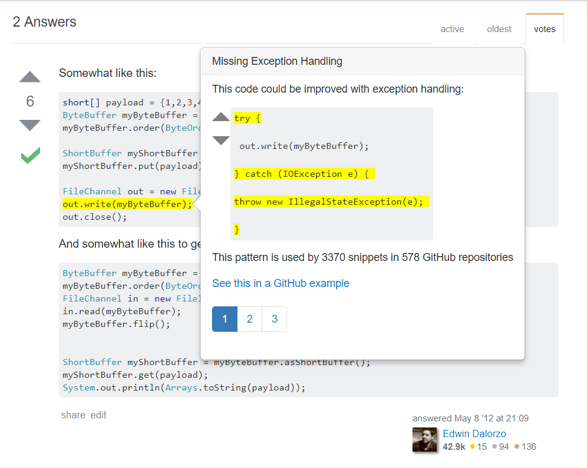

I felt so productive this week because I got to leave the JavaScript/CSS libraries behind and do some honest-to-goodness coding. While libraries can be helpful in the long run, so much time seems to be spent learning how to use and configure them, while I feel more comfortable with the process of just coding, testing, and debugging.
On Monday, Dr. Kim, Tianyi, and I video-chatted with Björn Hartmann again, plus his postdoc Elena Glassman. We sent them our UI prototype so far so that hopefully they can help us come up with some good designs and features for it from their HCI perspective.
With the UI design out of the way (for now), I got to start looking more into the back-end of the plugin. First, we wanted the plugin to extract the code snippets (as in, the text between the <code> tags in any SO post) from the HTML of the StackOverflow page, and send that to the server. This in itself was pretty simple, but there was some added complexity: we also needed to create a unique ID for each code snippet we extracted in order to identify it when the server instructs the plugin what to do with them (e.g. highlight lines). So, for each code snippet I extracted, I had to walk through all of its parent divs until I found the post div it was contained in, grab its ID, and then add the index of that code snippet to it for that snippet's ID. So the first code snippet in a post would be something like "1234567-0", the second would be "1234567-1", and so on.
Then, these snippets needed to be sent to the server. We decided to make the snippets + IDs JSON objects, and sent them to the server as a JSON array. Once there, the server had to parse the array it received into something it could use. Tianyi suggested just creating a Java class that would have the body of the snippet and its ID as its fields. It took a bit for me to figure this out, but I ended up using the Jackson library, a JSON parsing library for Java. I was having serious issues getting it to send right, but I realized that I needed to send the array itself, not the object that held the array. It's a little thing but it was completely crashing Jackson's parsing mechanism. Oops.
After figuring that out, it was time for more server-side work. I downloaded MySQL and set up my own copy of the Maple database. I've worked with SQL before using PostgreSQL, so there was some brushing up to do but I got a handle on it pretty quickly. Tianyi also needed me to learn how to use Java to prepare and execute MySQL queries. I've done this with PHP before as well so I understood the concepts. I created a MySQL access class for our server, and added a method that, given an API class + method, would query the server for related patterns and return them in an ArrayList.
Today (Friday), it's back to CSS -- Tianyi had an idea for upvote/downvote buttons (similar to what you see on Stack Overflow's posts) for the patterns we return. So, I'm trying to find the best/easiest way to implement these buttons and send their results to the server. So far I have the buttons displayed, and this weekend I'll work on sending their ID to the server so that the votes can be stored there. This is what the popup looks like at this point:

That's it for this week; I feel really good about what we've accomplished since Monday. And, in other news, I recently found a friend in the lab who now lives at my desk: